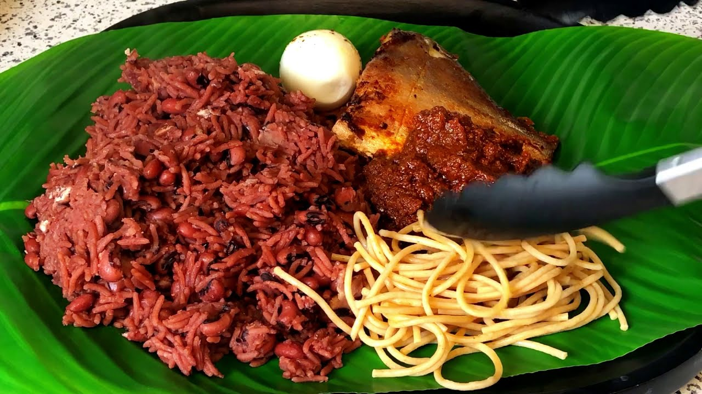

RICE & BEANS RECIPE

Description
Waakye is a dish of Ghanian style rice and beans.
White rice and beans like black eyed peas, cow peas or red beans are boiled along with waakye leaves and a little salt until they are soft. There are no other flavorings or spices added.
The dish is then paired with other foods to make a complete meal.
Ingredients
- Dried black eyed peas, soaked overnight – 1 cup
- Dried millet stalk leaves – 10
Steps
- Fill a pot with about 4 cups of water.
- Add the millet leaf stalks
- Boil the water and millet leaf over high heat. The millet
leaves will begin to turn the water a deep red color.
- Rinse the soaked beans and add the boiling water.
- Cover the beans let it cook until it is tender. Add water by the cup if the beans dry out before they are soft.
- Rinse the rice until the water is clear and add to the softbeans.